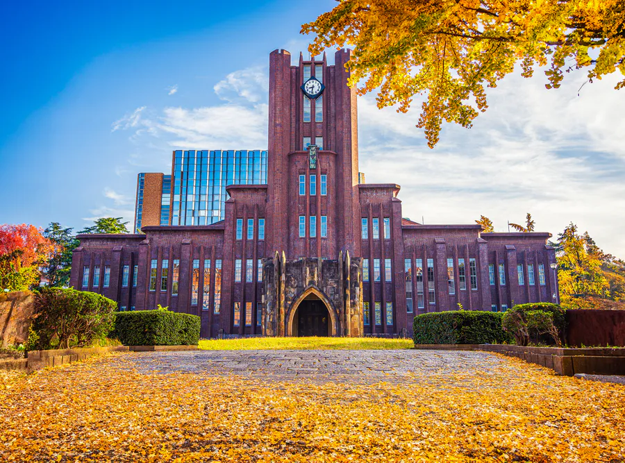
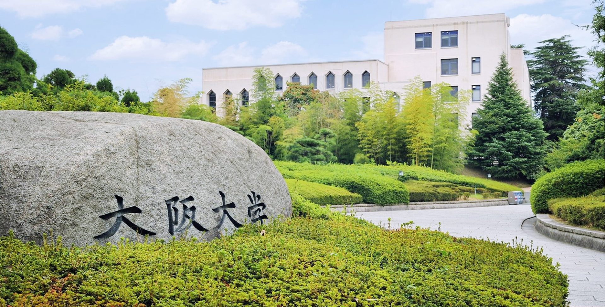
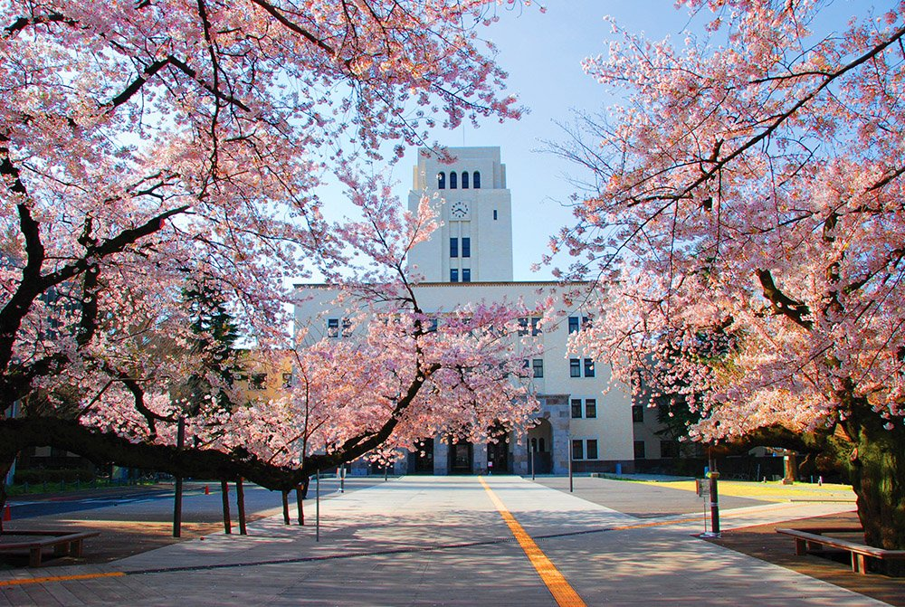

Japan is one of Asia's leading education destinations. It is known for advanced technology, innovation, research, and high academic standards. Japanese universities offer modern facilities and strong industry connections.
Students choose Japan because of its safe environment, rich culture, affordable living options in many cities, and growing number of English-taught programs. Japan is also a global leader in robotics, engineering, artificial intelligence, and manufacturing.
Japan offers modern cities with excellent universities, efficient transport systems, and strong career opportunities.
Tokyo is Japan's capital and one of the world's most advanced cities. It offers top universities, technology companies, and global opportunities.
Kyoto combines traditional culture with excellent education. It is home to some of Japan's leading universities.
Osaka is known for business, engineering, innovation, and a vibrant student lifestyle.
Nagoya is a major industrial and technology centre with strong engineering and research opportunities.
Japan is globally recognised for robotics, AI and advanced technology.
Many scholarships are available for international students.
Students can enjoy Japanese culture, safety and modern lifestyle.

The University of Tokyo is Japan's highest-ranked university and one
of Asia's leading research institutions. It is known for academic excellence,
innovation, and contributions to science, engineering, and public policy.
Location: Tokyo
Popular Courses:
• Computer Science
• Engineering
• Economics
• Medicine
• Artificial Intelligence
QS Ranking: Top 35 globally
International Students: 5,000+
Kyoto University is one of Japan's most prestigious universities.
It is recognised for research excellence, innovation, and strong
programs in science, engineering, and medicine.
Location: Kyoto
Popular Courses:
• Engineering
• Physics
• Medicine
• Environmental Science
• Biotechnology
QS Ranking: Top 50 globally
International Students: 3,000+

Osaka University is one of Japan's leading national universities.
It is known for advanced research, international collaboration,
and strong engineering and medical programs.
Location: Osaka
Popular Courses:
• Engineering
• Medicine
• Computer Science
• Economics
• Robotics
QS Ranking: Top 80 globally
International Students: 2,500+

Tokyo Institute of Technology is one of Japan's top universities
for science, engineering, and technology. It is highly respected
for research and innovation in advanced technology fields.
Location: Tokyo
Popular Courses:
• Computer Science
• Artificial Intelligence
• Mechanical Engineering
• Electrical Engineering
• Data Science
QS Ranking: Top 100 globally
International Students: 1,800+
Scholarships, tuition fees and university requirements may change every year.
For latest updates, visit the official Study in Japan website.
Visit Official Study in Japan Website